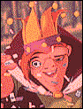

Contents | Features | Reviews | News | Archives | Store |
 |
|
| Movie Credits | Buy It! |
The Hunchback of Notre Dame
Review by Carrie Gorringe
|  | Directed by Gary Trousdale and Kirk Wise. Starring the voices of Tom Hulce, Animation Screenplay by Tab Murphy, |
As if the Walt Disney Company didn’t have enough problems with controversy at its animation studios -- what with Native Americans angered over offensive terminology used to refer to Native American women in last year’s Pocahontas, Evangelical Christians still in a palaver over presumed subliminal sexual messages in Aladdin (and the company’s policy of paying health benefits to employees in same-sex relationships) and threatening to boycott Disney products, not to mention Arab Americans, who demanded and got changed lyrics in one of the songs in Aladdin -- there is yet a new contretemps in the making; the company has managed to offend lovers of literature, as the hue and cry over Disney’s rendition of The Hunchback of Notre Dame demonstrates. It seems that even bibliophiles constitute a majority group, these days -- and, sadly, they do. But the complainants have the much-abused concept of "culture" on their side; not only has Disney eviscerated a literary "classic," but, they claim, this particular adaptation is the canary in the mine, so to speak, a harbinger of more sinister cultural degradations to come in dumbing down great works of art in order to make them more accessible to the masses.
Much as one shares a degree of sympathy for the cause they espouse, one cannot help but wonder at the deliberate selectiveness of their approach to the problem at hand; for instance, not one substantive complaint has been raised against the abominations recently committed by Pen Densham upon Defoe’s Moll Flanders, a cinematic "adaptation" that belongs solely to the category of "in name only," as it borrows much more of its plot from Cleland’s Fanny Hill than from anything ever penned by Defoe. And what of Disney’s adaptation of Oliver Twist in 1988 into the animated feature, Oliver and Company? Not a peep of any substance over the presumed degradation of Dickens was heard. Only now and in this instance are the barricades being erected with a preternatural zeal, and the object of their defense makes a surprising choice.
While there is no disputing the insightful and mellifluous prose that Victor Hugo brought to his 1831 novel, Notre Dame de Paris, there are some dispute as to Hugo’s intent in writing it. Hugo wrote this novel for two reasons: the more prosaic reason was to avoid having to pay back an advance from his publisher, and, more nobly, to fight for the preservation of Notre Dame Cathedral, then slated for demolition. Much of the beauty in Hugo’s prose comes in those sections devoted to historical insights about architecture and to the psychological insights that Hugo provides concerning minor characters. The portions concerning the love story -- those most familiar to anyone who has never read the novel -- are nothing more than pure romantic melodrama; indeed, some of the prose is so purple, especially in scenes between the gypsy Esmeralda and her would-be lovers, the shallow Phoebus and Dom Claude Frollo, the archdeacon, that it could be transposed between Hugo’s work and a Mills and Boon potboiler with no changes necessary. Witness the scene in which Esmeralda, sentenced to death for a crime committed by Frollo, is confronted by him in her cell with promises of freedom and his undying love: ."..We should love one another, we should pour out our two souls one into the other, we should feel an unquenchable thirst which together we should slake unceasingly from the inexhaustible cup of our love!" -- and that at the end of four pages in much the same tenor. I don’t mean to degrade Notre Dame de Paris, a novel for which I have considerable respect and affection, but its tone is too inconsistent for any use as the definitive object on which to mount a defense of culture; many would no doubt consider the 1923 and 1939 film versions (starring, respectively, Lon Chaney and Charles Laughton) to be more to their tastes than the version created by Hugo; in fact, several elements of the Disney version, including the framing of successive shots in sequences, are so similar to those found in the 1939 version that the resemblance is almost uncanny. But what can’t be ignored in the midst of this contretemps is the potential fear and resentment that Disney may have inspired by its latest corporate acquisitions -- two emotions that should never be discounted in the drive to save humanity from itself.
Unfortunately, the end product in this case has to be discounted considerably from original expectations, not in the name of belles-lettres defamation so much as an obsession with technology to the exclusion of all other vital elements, including intelligent dialogue (among the higher points in this regard is an order from Phoebus telling his horse, Achilles, to "heel"; among the lower points in this regard was a terrifying realization that nearly all of the adults in the audience failed to comprehend the significance of the pun, so perhaps the culture vultures’ complaints are not without some legitimacy). It isn’t the softening of Quasimodo’s character --as played by Hulce, he displays all the psychological angst of a typical American teenager with a large acne cyst on his chin -- that causes difficulties, nor is it the addition of three gargoyle sidekicks, named Hugo (Alexander), Victor (Kimbrough) and Laverne (the final performance from the wonderful character actress Mary Wickes) who run around dispensing advice to their dear friend "Quasi"; indeed, without them, this film would be far drearier. One can’t even blame Disney for turning Phoebus (Klein) from a cad into a stalwart American hero, or for turning Esmeralda (Moore) into a heroine with excessive levels of feistiness that are so anachronistic as to border upon the ludicrous (even Esmeralda’s goat, Djali, seems to have borrowed some defensive moves from Chuck Norris). All of these elements, never mind their obvious sources, could have and should have worked as a unit, because they do so individually. In fact, if one were feeling so inclined, one could stoop to the meretricious excuse that one can’t expect better from mere "animation."
Unfortunately, it’s an easy excuse to make in regard to this film, but the real problem with Hunchback has nothing to do with the putatively low quality of animation. Rather it stems from the fact that it never coalesces into a magnificent whole, because the visuals have assumed too much authority at the expense of what has made Disney a nonpareil among animation studios: the ability to combine incomparable visuals with the gift for telling a story that has relevance and is spellbinding, accompanied by memorable music. Only the visuals are in attendance at Hunchback, and are displayed to the point where you wish they would simply disappear. Nearly every sequence in this film has either a sweeping three-dimensional pan or a three-dimensional dolly shot, sometimes several in succession and while said shots can be effective when used sparingly, they lose all charm when overused. Granted, the animation division has been working since 1986 on perfecting its computer animation, and the results should be rewarded, but what was a rare, breathtaking treat now has the pall of the all-too-familiar. Furthermore, overuse tends to restrict the possibilities for narrative development; if the only intent of a sequence is to get Quasi swinging through the air over crowds yet again, then there isn’t much opportunity for anything else to develop. The team in charge of making Hunchback have stated repeatedly that one of their proudest achievements in this film has been to create crowd scenes in which individual figures actually move in the background. But the result on screen is an illustration of the axiom that just because one can do it, doesn’t mean one should. This film "swoops" so much that theatres might want to hand out Dramamine at the door, although a stimulant would be more useful; for a film that is a mere eighty-six minutes in length, it drags along at an unmercifully slow pace.
While the development of the computer animation technology is an important development in animation, one gets the funny feeling that this aim was pursued to the exclusion of all else. The characters are woefully unidimensional, more so than normal, and the Mencken/Schwartz songs play like uninspired parodic selections from their other Disney scores. Indeed, the overall impression one gets after seeing the film is a sense of desperation from all approaches; more to the point, there’s a sense that the animation division is overextended with its obligations to produce a new feature every year, and that the originality banks are running close to empty. This isn’t a film without a brain as much as it is one without a heart -- and even a spirit. At only one point in Hunchback does the film actually comes close to displaying any of the dark and contradictory impulses of Hugo’s work and that is during the "Hellfire" sequence, when Frollo (Jay) confesses his desire for Esmeralda, all the while displaying the seeds of his own destruction. On its own, this sequence evokes a glimmer of the terrifying and masterful spectacle that animator Bill Tytla achieved in animating the Black God in Fantasia’s "Night on Bald Mountain" sequence. One can only speculate on what type of film Hunchback could have been if its makers had chosen to follow this model. There will be considerable noise from this Hunchback as the bells of the cash register ring out with each new opening, but the sound that resonates from its center will ring very hollow indeed.
Contents | Features | Reviews | News | Archives | Store
Copyright © 1999 by Nitrate Productions, Inc. All Rights Reserved.